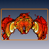

These examples illustrate some of the kinds of visualizations that are possible using the Large Data Pack. In addition to allowing one to work with very large data sets (over hundreds of gigabytes), this pack also offers advanced rendering techniques. These demos require a high-end graphics board supporting shaders.
 Ortho slice with emboss mapping